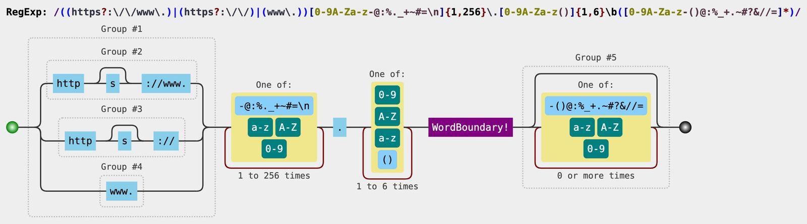
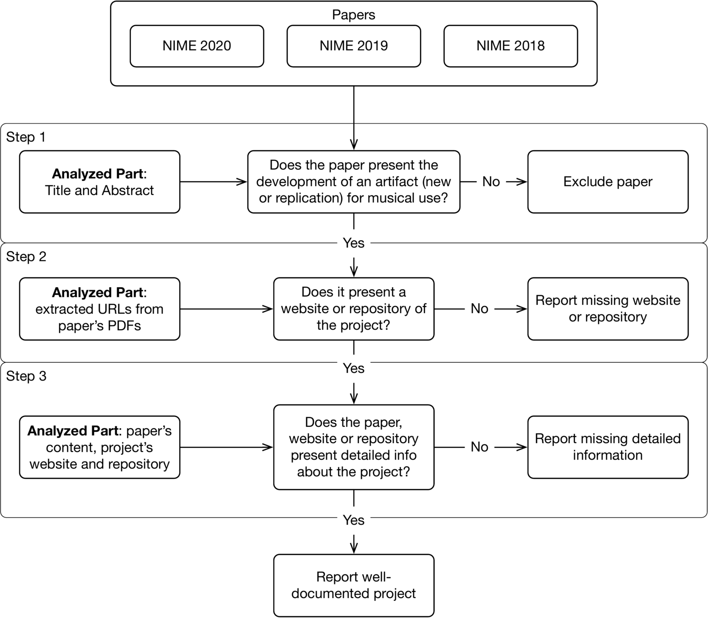
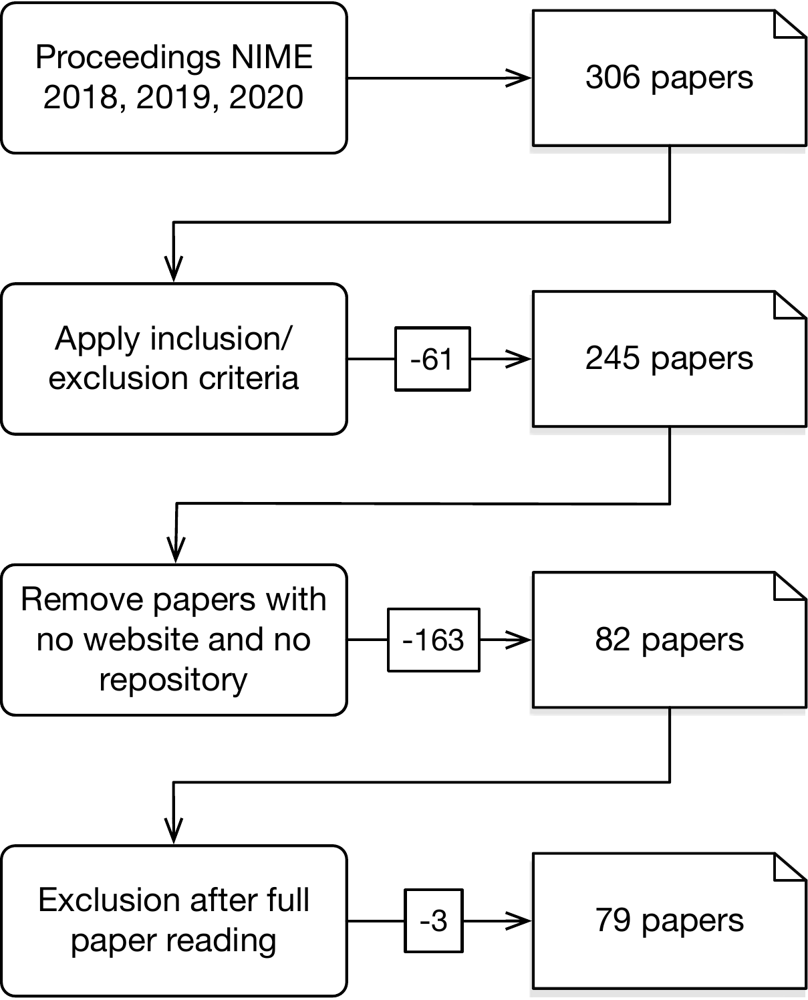
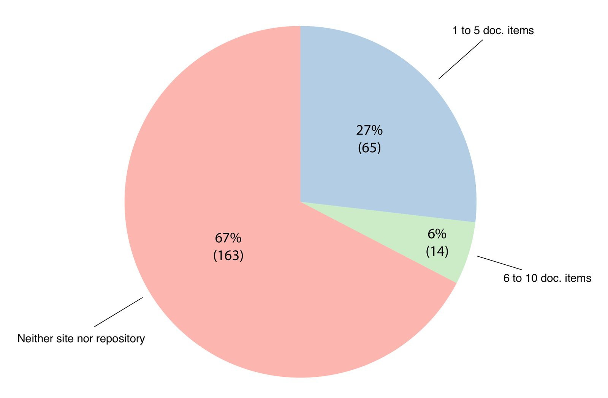
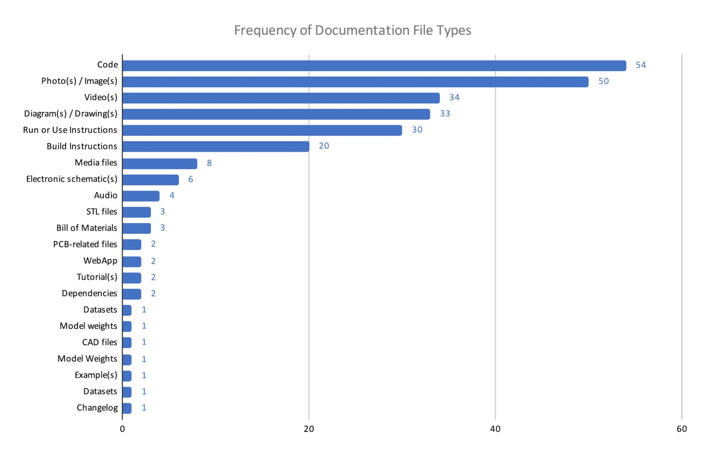
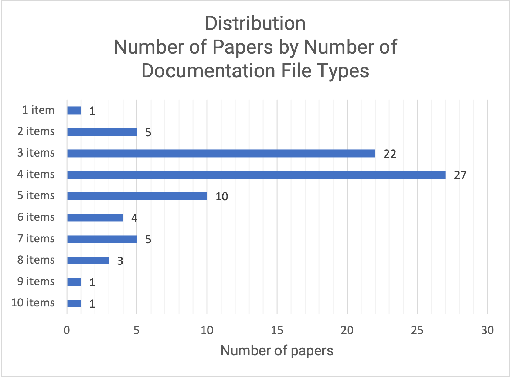
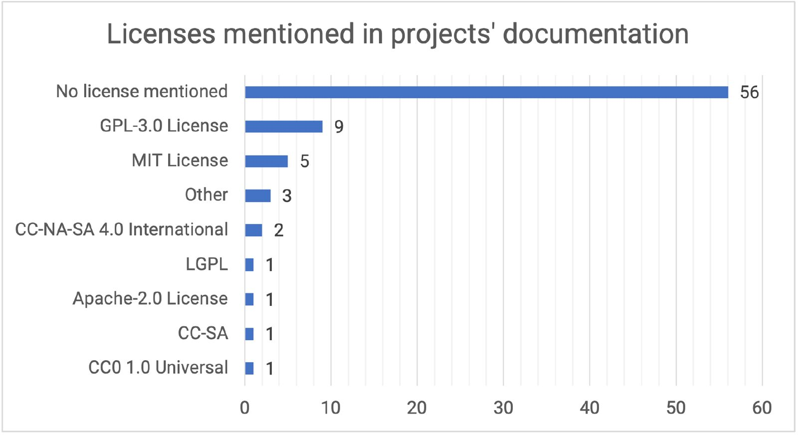

Documentation and Replicability in the NIME Community
Abstract
In this paper, we discuss the importance of replicability in Digital Musical Instrument (DMI) design and the NIME community. Replication enables us to: create new artifacts based on existing ones, experiment DMIs in different contexts and cultures, and validate obtained results from evaluations. We investigate how the papers present artifact documentation and source code by analyzing the NIME proceedings from 2018, 2019, and 2020. We argue that the presence and the quality of documentation are good indicators of replicability and can be beneficial for the NIME community. Finally, we discuss the importance of documentation for replication, propose a call to action towards more replicable projects, and present a practical guide informing future steps toward replicability in the NIME community.
CCS Concepts
Software and its engineering Documentation; Human-centered computing Sound-based input / output; Interaction design theory, concepts, and paradigms
Author Keywords
Replicability, reproducibility, documentation, review, NIME community
Introduction
Replication is a fundamental aspect of scientific and technological research, enabling peers to validate or possibly challenge existing results [1]. Replication is also essential in learning since replicating existing works allows us to understand complex developments' intricacies fully. While research domains may strongly value novelty, replication can be fundamental as in the case of artistic practice, for instance, for craft development.
Our principal question for the NIME community is whether supporting replicability is in opposition to our collective interest in novelty and idiosyncrasy (the conference is named "new" interfaces for musical expression). Our community’s quest for novelty can be viewed as a gradual breadth-first search through a vast design space for Digital Musical Instruments (DMIs). Improving the documentation and replicability of our musical artifacts should help us avoid "reinventing the wheel" and instead focus our efforts on either a) under-explored regions of this design space or b) tweaking designs that have been deemed interesting or "successful". Perhaps parts of the community are interested in instrument aesthetics that are dependent on uniqueness and mystery—of course, this also is fine. Still, it might be better for us to document and discuss this preference explicitly (see, e.g., the CC No-derivative works license) rather than depending on obscurity.
Assuming that some significant portion of the NIME community is interested in a collective exploration of the digital musical instrument (DMI) design space, what do we gain from trying to make our work truly replicable? The benefits can be explored from several perspectives, some of which are outlined below.
Expanding composition and performance
With replication, instruments become available for users in different locations and cultures and future generations, enabling more performers, composers, and audiences to experience artifacts or systems. Multiple copies of an instrument can support composition workshops, and concerts focused on a particular DMI. Audiences lack context for understanding new instruments, and historically composition and performance practices have emerged from collective creation and experience/evaluation over years or centuries. The generation of new contexts in which new instruments and interfaces can be interpreted, understood, and enjoyed can be fostered through such workshops and concerts, as well as through ensemble performances in which more than one instance of a new instrument are played together [2].
Evaluation
Some (though certainly not all) NIME publications make claims regarding their new creations, in many cases explicitly acknowledging that these claims need more data to be more than anecdotal. Well-documented NIMEs—coupled with a culture of replication in our community—could strengthen existing empirical results and help us learn from our failures. Observations of NIMEs are often experiential and subjective rather than objective through measurements of speed or efficiency, and replication can also help. A description or a video of an instrument cannot replace the understanding one gains by holding and interacting with the instrument. Without the ability to recreate and interact personally with the artifact or system, others can not form an opinion of its playability or other subjective and context-dependent attributes.
Growth, remix and avoiding obsolescence
Replicability strongly impacts the difference between a “living” instrument and an archived one. Unfortunately, the NIME conference's history is littered with once-interesting but now-unplayable interfaces, artifacts, and systems—unplayable due to age, breakage, obsolete software, missing drivers, and any number of other legitimate reasons [3]. Good documentation may allow “porting” the instrument to newer hardware and software platforms in the future. Even more importantly, it enables evolution, inspiration, extrapolation, and remixing of existing designs, keeping the design alive, so it doesn’t need to be resurrected except as a historical curiosity.
Replication beyond NIME, in other areas
In this paper, we focus on the replicability of artifacts, one among seven research contribution types categorized in the field of Human-Computer Interaction (HCI) [4]. The NIME conference started in 2001 as a workshop for the leading venue in HCI: the CHI conference. Members of the CHI community organized the RepliCHI panel [1], leading to a series of workshops [5],[6], and Special Interest Group (SIG) towards a new submission venue for replication [7]. The organizers of the RepliCHI panel stated that their community and therefore themselves “do not value, facilitate, or reward replication in research, and often take the significant results of a single user study on 20 users to be true" [7]. Replication of research results is not rewarded, while researchers are pushed to capitalize on novelty in their research. Artifacts from the NIME community may feature hardware or software components. Perkel discusses challenges faced by scientists who dare themselves to revive and run their own decades-old code, including replacing extinct hardware and dead language [8].
Replication in past NIME editions
Replicating a DMI can be a complex endeavor. It may involve both device replication and the information on sound synthesis and mapping choices with the original context that needs to be available.
Three examples illustrate how complex DMI replication can be.
In the early 2000s, the last author has tried to acquire a copy of Michel Waisvisz’s the Hands. Though a version of the Hands had been produced in the ’90s, called the Midi Conductor [9], none were available at that time. After discussing with Waisvisz on several occasions, some possible avenues for creating a Hands version were mentioned but unfortunately not pursued. Despite the immense impact of this device in the computer music and NIME communities and the availability of several videos documenting Waisvisz’s performances, to this date, creating a faithful version of the Hands is not straightforward.
A second example relates to Serge de Laubier’s Méta-instrument, another important NIME with a long and varied history of use [10]. After purchasing a copy of the 2nd version of the Méta-instrument in the mid-2000s, we wanted to perform some of its existing repertoires. Even with the device at hand, it proved difficult to obtain detailed information on the synthesis methods used in existing pieces.
A third example involves the Buchla Lightning, perhaps one of the most widespread and impactful commercial NIMEs, including an embedded sound synthesizer card. We purchased a version of the Lightning II around 2002 and tried to perform examples of performances by Lightning virtuoso Mark Goldstein, most notably his soundtrack for Murnau’s 1926 Faust silent film. We had access to Goldstein’s score (notation of gestures and patches used throughout the movie) and a video of his guest performance during NIME03’s opening concert. The issue here was that the version of the Lightning we purchased had a different sound card and, therefore, not the same patches as those in Goldstein’s device, making it complicated to use it in that context.
In NIME literature, the amount of papers specifically proposing the replication of NIMEs originally developed by other designers is minimal. The analysis of NIME proceedings revealed only two papers matching this proposition: 1) Rebuilding and Reinterpreting a Digital Musical Instrument - The Sponge [11], and 2) Learning from History: Recreating and Repurposing Harriet Padberg’s Computer Composed Canon and Free Fugue [12].
Rebuilding and Reinterpreting the Sponge
Tom et al. rebuilt and reinterpreted the Sponge, a DMI initially developed by Martin Marier. The original DMI was first presented by Marier at the NIME conference in 2010 [13] and was described as a DMI built to detect squeeze, flexion, torsion, and button action to form an interface to generate and sculpt sounds.
Even if the original Sponge paper did not present complete building instructions, Marier still maintains a website with all the building process documented, software used, and a bill of materials containing all necessary hardware, including cost (in Canadian dollars) [14].
Tom reported that even though the instructions provided at Marier’s website to reproduce the Sponge were thorough, he contacted the original author to answer some questions that arise during the replication process.
The replication experience gave Tom et al. the opportunity to review the building process and the physical instrument. The paper authors then reinterpreted the Sponge by replacing sensors, embedding synthesis processes, and adding vibrotactile feedback. Since the final instrument deferred too much from the original Sponge, the authors decided to rename the DMI to FlexSynth. Surprisingly, the FlexSynth [15] does not contain all necessary documentation to replicate the new DMI. While one can currently find in the repository software code, including FlexSynth firmware, there are no building instructions, bill of materials, or other information on using the available Max/MSP patches.
Harriet Padberg’s Computer Composed Canon and Free Fugue
Savery et al. proposed a modern recreation and utilization of the Computer-Composed Canon and Free Fugue algorithm, originally composed and programmed by Harriet Padberg [12]. The original software was programmed in FORTRAN and can be described as a program to map text (individual letters) to pitch, rhythm, and musical phrasing. Savery et al. recreated the algorithm from Padberg’s thesis: PyPadberg [16]. PyPadberg was used in a music piece entitled Not Even One, composed by Molly Jones, an audio-visual piece—Brevity— composed by Anna Savery, and to create a novel mapping for the keyboard—the Padberg Piano—proposed by Anthony Caulkins.
Caulkins’ proposition can also be seen as a DMI built using Padberg’s algorithm. The paper authors describe Padberg Piano as a software instrument available as an audio plugin, allowing other composers to use the standard piano notation for the performer, but transposing the resulting pitches in a 24-key per octave microtonal mapping.
Even though PyPadberg is open-source, Padberg Piano does not contain a public repository. Like FlexSynth, an initiative to replicate and reinterpret other DMIs does not provide enough information to replicate the new instrument directly from the documentation.
Documentation Review
Documentation is an essential step towards replicability. In the context of this paper, documentation is the set of texts, images, photos, illustrations, diagrams, videos, source code, models, and any other media that describe or represent a certain artifact, covering how it is, how it works, how users can use it, and how it can be built. Without a well-documented project, replication becomes an arduous task.
To understand the current state of NIME projects’ documentation, we reviewed 306 papers in the published proceedings from 2018, 2019, and 2020 editions of the NIME conference. We focus on documentation because we consider it is an observable portion of the replication process.
Research questions
Our research questions for this review are:
RQ1: Do projects published in the NIME conference present additional documentation other than the paper?
RQ2: Does this documentation present detailed information to potentially allow replication?
Data source
This review data source is the papers published in the NIME proceedings in 2018, 2019, and 2020. Table 1 presents the number of papers per year in the NIME conference.
We chose the last three editions of the conference to cover the most recent projects. Our strategy with this first run of the review is to understand the details that may be automated and, in the future, expand the number of editions of the conference proceedings.
Number of papers in reviewed NIME editions
Year | Number of papers |
|---|---|
2018 | 92 |
2019 | 88 |
2020 | 126 |
Total | 306 |
Search strategy
Regarding RQ1, we performed an automatic extraction of URLs of the 306 PDF files. We considered that links to the project’s website and/or repositories are the more direct way for the paper’s authors to share additional information about the project. Image 1 presents the regular expression used to automatically extract the URL from the papers.


The regular expression we used for URL extraction.
Regarding RQ2, we consider that the documentation of a project is not only descriptive files but also the available source files.
Inclusion and exclusion criteria
We focus our review on technological propositions of papers that presented the development of an artifact (new or replicated) for musical use. In the context of this review, we considered that an artifact is an object that was created, be it software or hardware, acoustic or digital. And the concept of "musical use" covers general areas such as musical performance, installations, sound-related applications.
As exclusion criteria, we defined that papers that do not clearly state the development of an artifact would not be included in our review. To illustrate, some examples of excluded papers would be the ones whose only present general discussions, methodologies, conceptual frameworks, user studies, evaluation of existing artifacts, and surveys.
Refinement Protocol
The steps for refining the pool of reviewed papers follow the questions presented in Image 2.


Refinement Protocol
First, our team analyzed the title and the abstract of the 306 papers to find pieces of evidence of the development of artifacts for musical use to match the previously defined inclusion and exclusion criteria.
In the second step, a list of URLs was automatically extracted from the PDF files of the included papers. The code used for URL extraction can be found in this repository. The review team tested and visited each URL to validate if the links actually related to the presented project or were just reference to other projects. Then, we selected the URLs of the project’s website or repository for further analysis.
In Step 3, we considered papers with either website or repository. Then, we analyzed the project’s available materials (paper’s content, project’s website, and/or repository) to check the existence of different documentation file types based on a checklist inspired by [17], which we present as follows:
Bill of Materials
Build Instructions
Diagram(s) / Drawing(s)
Electronic schematic(s)
Photo(s) / Image(s)
Run or Use Instructions
Textual Description(s)
Video(s)
Code
Media files (e.g. samples)
STL files
PCB-related files (e.g. GERBER; Eagle)
CAD files
To consider documentation items that were possibly not covered by this list, we allowed the reviewer to add items during the review. The emergent documentation items are:
Audio
Changelog
Datasets
Dependencies
Example(s)
Model Weights
Tutorial(s)
WebApp


Result of the refinement
In Image 3, we show the number of papers selected for each step. From the original 306 papers, after initial exclusion based on title and abstract analysis and excluding paper after full paper reading, the resulting pool was composed of 242 papers (this amounts to an approximate 21% exclusion rate). Finally, out of 242 papers, 67% (163) linked neither project website nor repositories, resulting in 79 papers eligible for analysis of documentation items and file types (see Image 4).


Division of papers with neither site or repository, 1 to 5 documentation items, and 6 to 10 documentation items
As a guideline for comparison, we assume that the high diversity of documentation items is advantageous for a specific project. Our review did consider the number of specific items, we only checked the presence or absence of an item. We believe that the diversity of materials illuminates different aspects of the project and can facilitate the understanding of people interested in replicating the artifact.
Results
In this section, we focus on the results regarding the analysis of 79 selected projects. All the projects presented the minimum of documentation, but 4 (5%) out of 79 had only textual description with no photos, images, video, or other documentation items. We found that 25 (32%) of the projects did not present any source file.
Concerning the project components, 32 (40%) projects had hardware and software, and 47 (60%) projects had only software. No project in the selected group reported only hardware components. As can be seen in Image 5, code is the most frequent documentation item present in 54 (68%) projects. From the 32 projects that reported both hardware and software components, 14 (43% of 32) of them had only code, and 12 (37.5% of 32) no source file.


Frequency of documentation file types on the projects’ documentation
Image 6 shows the distribution of projects segmented by the number of diverse file types. One project (1%) out of 79 presented 10 different documentation items. This particular project did not have Build Instructions or Run/Use Instructions and also no Media files. The most numerous group, with 27 (34%) projects, presented 4 different documentation file types.


Distribution of papers with segments of documentation items
About licenses (Image 7), 56 (71%) of the 79 projects did not mention any license on their website or repository. On the other hand, the most commonly used license was GPL-3.0 with 9 projects (40% of the 23 projects that mentioned a license).


Licenses mentioned in projects’ documentation
Analysis
We found that two-thirds (163) of the papers that reported an artifact for musical use did not present further details about the artifact other than the paper. Additionally, only 14 (6%), out of 242 projects, showed more than six documentation items, which raises the question about how the projects are being documented. We could interpret that a project with a more diverse number of documentation items could present more details and, therefore, documentation with higher chances of being well understood. In other words, projects with more documentation items could communicate better, positively impacting its replicability.
The license is an important aspect of project sharing [18]. It is a permission communication tool whose intention is to have the project or part of it being used by others. That is why it is essential to analyze the presence of licenses in the project’s documentation in this review.
When 67% of the papers do not have additional information about the discussed artifact, 70% of the projects do not mention any license, and only 6% of the included papers have more than six documentation items, we could interpret that there is, in the majority of the papers, little intention for sharing the projects.
Discussion and Call to Action
There is a relatively small number of NIME papers whose documentation fulfills the guidelines proposed in the previous section or presents replicability as part of the main contribution. Several actions can be taken to improve and stimulate reproducibility and replicability in the NIME community.
There have been some efforts in this direction, including the workshop NIMEHub: Toward a Repository for Sharing and Archiving Instrument Designs, held at the 2016 NIME conference in Brisbane, Australia [19]. This half-day workshop promoted discussion towards the creation of a repository to share DMI design documentations. The discussion of such a repository appears to have been interrupted after the workshop, but we hope that this work can promote dialog on the subject.
NIME community is transdisciplinary, including researchers from different areas, artists, and entrepreneurs that may not wish to have their designs replicated. Our goal should not—and is not—make all DMI designs in the NIME community replicable. Nevertheless, we believe that those who intend to open their projects for replication should be encouraged, supported, and have proper guidelines to document instruments.
The creation of a repository for sharing DMIs can be one step toward creating a culture of replicability and replication. However, the utility of such a repository is linked to the community’s interest and effort in maintaining documentation of their own projects and its desire to replicate other instruments. What can be done to catalyze this cultural shift? The following sections present some initial thoughts and possible approaches to foment replicability.
Improving DMI Documentation for Replicability
A well-documented process of designing and building DMIs may solve some of the problems found in the previous section. Thorough documentation can include detailed textual descriptions and instructions, images, videos, diagrams, source files, and other relevant media. In the same way, we expect to have access to papers published decades ago, so we should be able to access the information required to replicate a particular DMI.
Guidelines for Replication-driven Documentation
As a result of spending a long time designing a particular DMI, instrument designers know how to build their instruments in detail. It is hard to predict what other researchers/designers will need to replicate a DMI successfully. The documentation process is cumbersome, and guidelines on what is necessary to ensure minimal replicability can help.
Inspired by the Open Source DMIs certification proposal [17] based on the Open Source Hardware Association, and by salient points from our review of the NIME conference, we developed a checklist that can be seen in Table 2.
Structured checklist of General, Hardware, and Software documentation of DMIs for replication. The marked cells represent which documentation features related to the development phases of a DMI.
Features | Architecture | Mechanical structure | Hardware / Electronics | Software |
Video | x | |||
Picture | x | x | x | x |
Diagram | General | Technical | Schematic | Modules |
Text Description | x | |||
Bill of Materials | x | x | ||
Building Instructions | x | x | Configuration | |
Instructions to Run | x | |||
Specification About | Materials | Components | ||
Editable Source Files | CAD Files | CAD Files | Source Files | |
Digital Fabrication Files | STL | GERBER | ||
Compiled Files | Binary Files | |||
Dependencies | x | x | x | x |
Examples | Example Code | |||
Media Files | Samples, Presets |
This structured checklist considers some possible aspects to include in DMI documentation. According to the components used in the DMI design, specific columns present the expected documentation to ensure the instrument replicability. As discussed in the NIMEhub workshop, standardization of hardware platforms can ease the process of documenting hardware [19].
However, the documentation needed for replication or reinterpretation of a DMI is not a matter of simply satisfying a checklist. It is a subjective process that is only verified when someone else manages to replicate the instrument. Moreover, a successful replication depends not only on the documentation but also on the technical abilities of the replicator, their access to tools and materials, amongst other factors. Documentation for replicability is a dialogic process that should always account for who it is intended for; the more detailed the documentation, the more inclusive it becomes.
Documentation is not always necessary for replication or creating new DMIs inspired by them, and most of the time direct access for the designer can replace a well-documented repository. However, the importance of repositories and an open database lies in the democratization of information, allowing a broader and more diverse set of potential replicators. We also believe that there’s always room for improvement in any documentation, and discussion forums may provide the grounds for continuous growing documentation based on concrete feedback from researchers, instrument designers, and replicators.
Distributed or Centralized Repositories?
There are many ways repositories can be organized and indexed. It is important to discuss the trade-offs between distributed and centralized architectures to ensure access to documentation.
Centralized repositories such as the one used for archiving the NIME conference proceedings (Zenodo [20]) and many other Open Science repositories have many advantages in terms of how trustworthy they are to keep scientific data accessible over time. Private or institutional websites can change the URLs of cited pages or can be deleted from servers.
This ruggedness, nevertheless, may come at a cost for the community. Hosting data in the form of videos, images, and source code comes with financial costs, and different platforms offer advantages and drawbacks that need to be openly discussed. Maintaining a central repository also demands large amounts of voluntary work, and a long-lasting commitment is also necessary for such a decision.
A distributed solution, on the other hand, can use already existing open repositories for videos (e.g. Vimeo, Youtube), source files (e.g. GitHub, GitLab, SourceForge), audio files (e.g. Soundcloud, Freesound), and other platforms [19]. Designers can be responsible for maintaining their own data in these repositories. The papers would reference these data on a new specific simplified meta-data centralized repository.
One noticeable advantage in sharing documentation in distributed Git repositories is the freedom to continuously update the documentation in a collaborative environment, where developers and potential replicators can trace each version, share issues, and contribute to the development of the documentation and the design. The git workflows through forks, branches and pull requests can help the documentation process.
Conversely, one problem with the decentralized approach is the uncertainty that this data will remain available over time. The scientific time scale is very different from what some of these platforms were designed for. How long will a video be available for free on YouTube? The future of such a platform is uncertain, and the unavailability of one repository can compromise DMI replicability.
We hope and expect that this discussion will expand beyond this paper and gather responses from the NIME community. Perhaps community feedback will lead to a mixed approach, in which distributed repositories can be continuously updated by the designers/researchers, along with a centralized peer-reviewed process with meta-data and crystallized release versions or forks of the distributed documentation. Any approach to protecting documentation depends on the level of commitment of the community to embrace and maintain such a system.
Other Actions to Stimulate Replication
Creating documentation for replicable DMIs is a process that demands considerable work that is not necessarily related to the primary research contribution. This section presents suggestions to encourage researchers and designers to engage in such efforts to create replicable DMI documentation.
New NIME publication format: A Replicable DMI Design Documentation
Publishing a paper in the NIME Conference proceedings presents a motivation for researchers to present their work and contribute to science, technology, and arts. A specific call for replicable (or replicated) DMIs could foster papers focused on replicate, recreate, rebuild, and reinterpret DMIs.
Further discussion is needed about the specifics of such special calls, but we could inherit many of our current practices of peer-reviewing, creating referenceable DOIs within an Open Science repository, and having them presented at the conferences. This publication type should probably also have some new features, going beyond the PDF format and allowing for the many media we listed above.
The NIME community already has opened on the 2019 NIME Conference the Music Proceedings recognizing the importance of artistic contributions as much as the scientific papers. Having a technical report as a new publication format would recognize rigorous design and engineering efforts without necessarily requiring associated scientific contributions. In our view, this would be a good step forward for our interdisciplinary community.
Certification and Badges
Another action that could stimulate replicability would be an official certification process for replicable DMIs such as that proposed by Calegario et al. [17]. A committee would evaluate proposed documentation and grant certification to those that match some prerequisites. That is currently done by the Open Source Hardware Association (OSHWA)[21].
A similar approach that would demand a smaller effort but could also have some positive impact would be to include in the submission process an optional badge to affirm that a paper is “Replication Friendly” and thus invites replication by others. A simple action that could stimulate people in engaging in better documentation for replicability.
Replication Challenge
An approach that could be considered is to propose a “NIME Replication Challenge”. In this challenge, we could reward people that replicates a previously documented DMI from the conference. This simple approach can help to create a culture of replicability not only focused on “novelties” but also engaging in each other’s work.
Replication Officers
We did not intend with this “call to action” to give any answers on what is the best thing the NIME community should do but to begin a discussion on how our community can improve towards replicability. Discussion of other topics such as diversity, inclusion, and environmental sustainability at past conferences has led to the creation of new officers in the NIME Steering Committee. We propose that “Replication Officers” could be created to serve as focal points for discussing and implementing such actions.
Limitations
The method used in the documentation review presents a set of limitations. Biases have possibly been introduced since the analyzed material was divided equally with six reviewers. Even though we discussed the criteria in consensus meetings, assuring that the review team had the most approximate understanding, the individual judgment might have differed during the review. To attenuate the impact of subjective interpretation, one of the reviewers also acted as a meta-reviewer, supervising the process and attempting to identify the proposed method’s divergent interpretation.
The second limitation concerns the review’s time window, which covered three years of the NIME conference. In future iterations, we plan to automatize some of the steps to increase productivity and enlarge the temporal scope.
The third limitation is related to the checklist we used to review the papers since it may not be complete leaving room for blind spots. To mitigate this, we chose to let the reviewer input documentation items that were not previously defined. However, this action is susceptible to bias since it is dependent on each reviewer’s attention and memory.
Conclusion
In this paper, we highlighted the importance of replication in the NIME community and its impact on the use, evaluation, understanding, and creations of digital musical instruments and other artifacts for musical expression. We discuss the concept of replication in other areas beyond NIME. Additionally, we revisited some experiences in Computer Music’s and NIME’s literature that report the replication of previously created instruments. Then, since documentation is a critical factor for allowing replication, we reviewed 306 papers from 2018, 2019, and 2020 of the NIME conference proceedings to investigate the projects’ documentation covering descriptive and source files. The result shows that the majority of papers has few or no documentation items and files other than the paper’s content. Finally, we call attention to the NIME community to replication-driven documentation and we propose some ideas to stimulate the community towards a replication-friendly environment.
Citations
- ↩Wilson, M. L., Mackay, W., Chi, E., Bernstein, M., Russell, D., & Thimbleby, H. (2011). RepliCHI - CHI Should Be Replicating and Validating Results More: Discuss. In CHI ’11 Extended Abstracts on Human Factors in Computing Systems (pp. 463–466). New York, NY, USA: Association for Computing Machinery. https://doi.org/10.1145/1979742.1979491
- ↩Malloch, J., & Wanderley, M. M. (2017). The routledge companion to embodied music interaction. In M. Lesaffre, M. Leman, & P.-J. Maes (Eds.).
- ↩Morreale, F., & McPherson, A. (2017). Design for Longevity: Ongoing Use of Instruments from NIME 2010-14. In Proceedings of the International Conference on New Interfaces for Musical Expression (pp. 192–197). Copenhagen, Denmark: Aalborg University Copenhagen. https://doi.org/10.5281/zenodo.1176218
- ↩Wobbrock, J. O., & Kientz, J. A. (2016). Research Contributions in Human-Computer Interaction. Interactions, 23(3), 38–44. https://doi.org/10.1145/2907069
- ↩Wilson, M. L. L., Resnick, P., Coyle, D., & Chi, E. H. (2013). RepliCHI: The Workshop. In CHI ’13 Extended Abstracts on Human Factors in Computing Systems (pp. 3159–3162). New York, NY, USA: Association for Computing Machinery. https://doi.org/10.1145/2468356.2479636
- ↩Wilson, M. L., Chi, E. H., Reeves, S., & Coyle, D. (2014). RepliCHI: The Workshop II. In CHI ’14 Extended Abstracts on Human Factors in Computing Systems (pp. 33–36). New York, NY, USA: Association for Computing Machinery. https://doi.org/10.1145/2559206.2559233
- ↩Wilson, M., Mackay, W., Chi, E., Bernstein, M., & Nichols, J. (2012). RepliCHI SIG: From a Panel to a New Submission Venue for Replication. In CHI ’12 Extended Abstracts on Human Factors in Computing Systems (pp. 1185–1188). New York, NY, USA: Association for Computing Machinery. https://doi.org/10.1145/2212776.2212419
- ↩Perkel, J. M. (2020). Challenge to scientists: Does your ten-year-old code still run? Nature, 584(7822), 656-. https://doi.org/10.1038/d41586-020-02462-7
- ↩Bongers, B. (1994). The use of active tactile and force feedback in timbre controlling musical instruments.
- ↩Laubier, S. de, & Goudard, V. (2006). Meta-instrument 3: A look over 17 years of practice. Proceedings of the International Conference on New Interfaces for Musical Expression. https://doi.org/10.5281/zenodo.1176953
- ↩Tom, A. J., Venkatesan, H. J., Franco, I., & Wanderley, M. M. (2019). Rebuilding and reinterpreting a digital musical instrument — the sponge. Proceedings of the International Conference on New Interfaces for Musical Expression. https://doi.org/10.5281/zenodo.3672858
- ↩Savery, R. J., Genchel, B., Smith, J. B., Caulkins, A., Jones, M. E., & Savery, A. (2019). Learning from History: Recreating and Repurposing Harriet Padberg’s Computer Composed Canon and Free Fugue. In M. Queiroz & A. X. Sedó (Eds.), Proceedings of the International Conference on New Interfaces for Musical Expression (pp. 423–428). Porto Alegre, Brazil: UFRGS. https://doi.org/10.5281/zenodo.3673021
- ↩Marier, M. (2010). The sponge a flexible interface. Proceedings of the International Conference on New Interfaces for Musical Expression. https://doi.org/10.5281/zenodo.1177839
- ↩Marier, M. (n.d.). Hardware | Making music with the sponge. Retrieved from http://www.martinmarier.com/wp/?page_id=89
- ↩Tom, A. (n.d.). flexSynth MUMT 620 Course Project. Retrieved from https://github.com/ajintom/flexsynth
- ↩PyPadberg. (2021). Retrieved from https://github.com/bgenchel/pypadberg
- ↩Calegario, F., Tragtenberg, Jo∼ao, Wang, J., Franco, I., Meneses, E., & Wanderley, M. M. (2020). Open Source DMIs: Towards a Replication Certification for Online Shared Projects of Digital Musical Instruments. In C. Stephanidis, A. Marcus, E. Rosenzweig, P.-L. P. Rau, A. Moallem, & M. Rauterberg (Eds.), HCI International 2020 - Late Breaking Papers: User Experience Design and Case Studies (pp. 84–97). Cham: Springer International Publishing.
- ↩Colazo, J., & Fang, Y. (n.d.). Impact of license choice on open source software development activity. Journal of the American Society for Information Science and Technology, 60(5), 997-.
- ↩McPherson, A. P., Berdahl, E., Lyons, M. J., Jensenius, A. R., Bukvic, I. I., & Knudsen, A. (2016). NIMEhub: Toward a Repository for Sharing and Archiving Instrument Designs. In Proceedings of the International Conference on New Interfaces For Musical Expression. Brisbane.
- ↩New Interfaces for Musical Expression Community on Zenodo. (2021). Retrieved from https://zenodo.org/communities/nime/
- ↩Open Source Hardware Association. (2021). Certified Open Source Hardware Projects. Retrieved from https://certification.oshwa.org/list.html